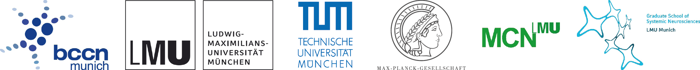
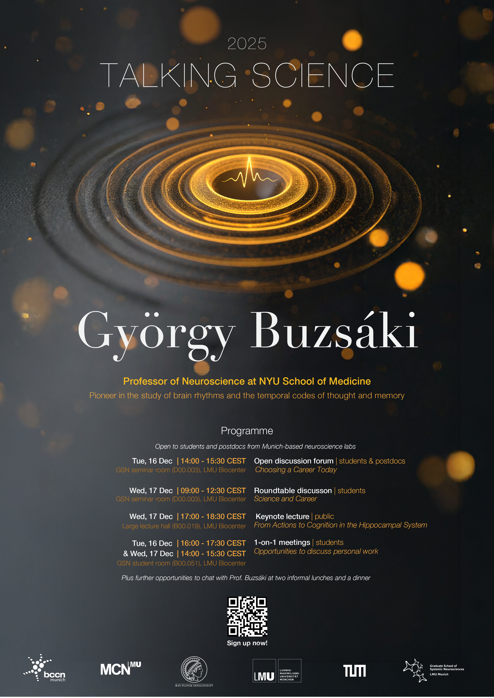

Talking Science with György Buzsáki
Talking Science is a unique opportunity to meet and talk about neuroscience with a leading researcher in an informal atmosphere - a two-day program for the MSc and PhD students of LMU, TUM, and the MPIs.

About
This year's guest is Prof. György Buzsáki (Biggs Professor of Neuroscience, NYU School of Medicine).
Over the past four decades, Prof. Buzsáki has built a body of work that defines modern systems neuroscience. His research on hippocampal and cortical circuits established the importance of neuronal oscillations — including theta rhythms, gamma cycles, and sharp-wave ripples — as the temporal framework for cognition. He has shown how these rhythms coordinate information flow, enable memory consolidation during sleep, and underlie the brain’s predictive coding of the world. Author of the influential book Rhythms of the Brain, Prof. Buzsáki continues to inspire multiple generations of scientists in neuroscience and beyond.
In this year’s Talking Science program, participants will be able to meet Prof. Buzsáki in small groups, join roundtable discussions on career choices and scientific trajectories, and attend his keynote lecture. The event provides a unique opportunity to engage with a leading figure in neuroscience..
Programme
Please sign up for events here! Places are limited, so secure your spot early!
- 12:30–13:30 — Martinsried
- Lunch with students
An informal lunch with Prof. Buzsáki and 6-10 students; a chance to chat in a relaxed setting. - 14:00–15:30 — GSN seminar room (D00.003), LMU Biocenter Martinsried
- Open discussion forum: Choosing a career today
A forum for open conversation on career paths in science, challenges, and opportunities. - 16:00–17:30 — GSN student room (B00.051), LMU Biocenter Martinsried
- 1-on-1 student meetings
Personal meetings with Prof. Buzsáki to discuss your own research and ideas (20-minute slots). Please sign up early, as places are limited. - 09:00–10:30 — GSN seminar room (D00.003), LMU Biocenter Martinsried
- Roundtable discussion with students
A group discussion focusing on Buzsáki's scientific contributions and insights. - 11:00–12:30 — GSN seminar room (D00.003), LMU Biocenter Martinsried
- Roundtable discussion with students
A group discussion focusing on Buzsáki's career and his advice for young researchers today. - 12:30–13:30 — Martinsried
- Lunch with students and postdocs
Another informal lunch. - 14:00–15:30 — GSN student room (B00.051), LMU Biocenter Martinsried
- 1-on-1 student meetings
Additional personal meeting slots. - 17:00 — Large lecture hall (B00.019), LMU Biocenter Martinsried
- Keynote lecture: From Actions to Cognition in the Hippocampal System
A public lecture open to the broader scientific community. - 19:00 — Martinsried
- Dinner with students
A social dinner to round off the visit.
Tuesday 16 December
Wednesday 17 December

Past speakers
- 2024
- Eve Marder (Brandeis University)
- 2022
- Peter Dayan (Max Planck Institute for Biological Cybernetics)
- 2021
- Ilana Witten (Princeton University)
- 2019
- Adrienne Fairhall (U Washington)
- 2018
- Matteo Carandini (UCL)
- 2017
- Christof Koch (Allen Institute for Brain Science) - cancelled
- 2016
- Gina Turrigiano (Brandeis University)
- 2015
- Gilles Laurent (MPI for Brain Research)
- 2014
- Ed Boyden (MIT)
- 2013
- Larry Abbott (Columbia University)
- 2012
- Nikos Logothetis (MPI for Biological Cybernetics)
- 2011
- May-Britt Moser (Kavli Institute of Systems Neuroscience)
- 2010
- Karel Svoboda (Janelia Research Campus)
- 2009
- Markus Meister (Caltech)
Contact
Talking Science is made possible through the generous support of the Bernstein Center for Computational Neuroscience Munich and organized by:
- Jonathan Gant (LMU)
- Elizabeth Herbert (TUM)
- Carlos Gomez-Guzman (MPI for Biological Intelligence)
- Lukas Meyer-Olbersleben (LMU)